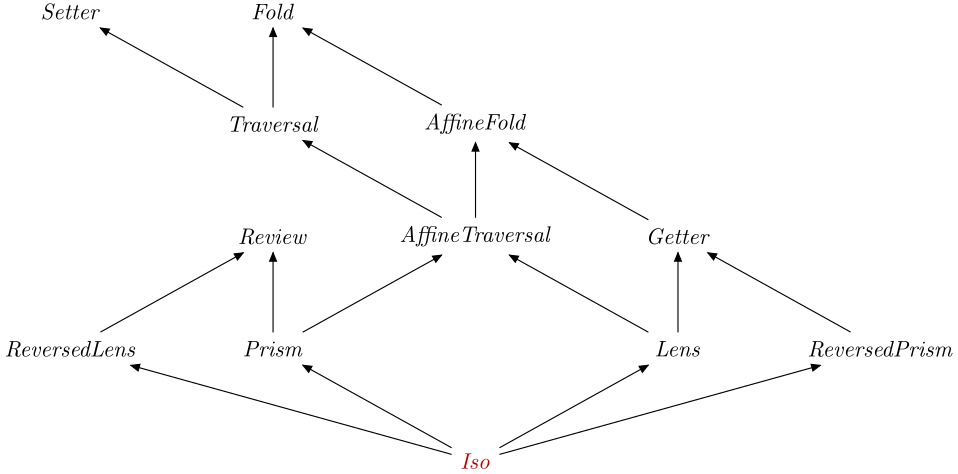

| Safe Haskell | Safe-Inferred |
|---|---|
| Language | Haskell2010 |
Optics.Iso
Description
An Isomorphism expresses the fact that two types have the
same structure, and hence can be converted from one to the other in
either direction.
Synopsis
- type Iso s t a b = Optic An_Iso NoIx s t a b
- type Iso' s a = Optic' An_Iso NoIx s a
- iso :: (s -> a) -> (b -> t) -> Iso s t a b
- equality :: (s ~ a, t ~ b) => Iso s t a b
- simple :: Iso' a a
- coerced :: (Coercible s a, Coercible t b) => Iso s t a b
- coercedTo :: forall a s. Coercible s a => Iso' s a
- coerced1 :: forall f s a. (Coercible s (f s), Coercible a (f a)) => Iso (f s) (f a) s a
- non :: Eq a => a -> Iso' (Maybe a) a
- non' :: Prism' a () -> Iso' (Maybe a) a
- anon :: a -> (a -> Bool) -> Iso' (Maybe a) a
- curried :: Iso ((a, b) -> c) ((d, e) -> f) (a -> b -> c) (d -> e -> f)
- uncurried :: Iso (a -> b -> c) (d -> e -> f) ((a, b) -> c) ((d, e) -> f)
- flipped :: Iso (a -> b -> c) (a' -> b' -> c') (b -> a -> c) (b' -> a' -> c')
- involuted :: (a -> a) -> Iso' a a
- class Bifunctor p => Swapped p where
- withIso :: Iso s t a b -> ((s -> a) -> (b -> t) -> r) -> r
- au :: Functor f => Iso s t a b -> ((b -> t) -> f s) -> f a
- under :: Iso s t a b -> (t -> s) -> b -> a
- data An_Iso :: OpticKind
Formation
Introduction
iso :: (s -> a) -> (b -> t) -> Iso s t a b Source #
Build an iso from a pair of inverse functions.
If you want to build an Iso from the van Laarhoven representation, use
isoVL from the optics-vl package.
Elimination
An Iso is in particular a Getter, a
Review and a Setter, therefore you can
specialise types to obtain:
view::Iso's a -> s -> areview::Iso's a -> a -> s
over::Isos t a b -> (a -> b) -> s -> tset::Isos t a b -> b -> s -> t
If you want to view a type-modifying Iso that is
insufficiently polymorphic to be used as a type-preserving Iso', use
getting:
view.getting::Isos t a b -> s -> a
Computation
Well-formedness
The functions translating back and forth must be mutually inverse:
viewi .reviewi ≡idreviewi .viewi ≡id
Additional introduction forms
equality :: (s ~ a, t ~ b) => Iso s t a b Source #
Capture type constraints as an isomorphism.
Note: This is the identity optic:
>>>:t view equalityview equality :: a -> a
coerced :: (Coercible s a, Coercible t b) => Iso s t a b Source #
Data types that are representationally equal are isomorphic.
>>>view coerced 'x' :: Identity CharIdentity 'x'
coercedTo :: forall a s. Coercible s a => Iso' s a Source #
Type-preserving version of coerced with type parameters rearranged for
TypeApplications.
>>>newtype MkInt = MkInt Int deriving Show
>>>over (coercedTo @Int) (*3) (MkInt 2)MkInt 6
coerced1 :: forall f s a. (Coercible s (f s), Coercible a (f a)) => Iso (f s) (f a) s a Source #
Special case of coerced for trivial newtype wrappers.
>>>over (coerced1 @Identity) (++ "bar") (Identity "foo")Identity "foobar"
non :: Eq a => a -> Iso' (Maybe a) a Source #
If v is an element of a type a, and a' is a sans the element v,
then non vMaybe a'a.
non≡non'.only
Keep in mind this is only a real isomorphism if you treat the domain as being
Maybe (a sans v)
This is practically quite useful when you want to have a Map where
all the entries should have non-zero values.
>>>Map.fromList [("hello",1)] & at "hello" % non 0 %~ (+2)fromList [("hello",3)]
>>>Map.fromList [("hello",1)] & at "hello" % non 0 %~ (subtract 1)fromList []
>>>Map.fromList [("hello",1)] ^. at "hello" % non 01
>>>Map.fromList [] ^. at "hello" % non 00
This combinator is also particularly useful when working with nested maps.
e.g. When you want to create the nested Map when it is missing:
>>>Map.empty & at "hello" % non Map.empty % at "world" ?~ "!!!"fromList [("hello",fromList [("world","!!!")])]
and when have deleting the last entry from the nested Map mean
that we should delete its entry from the surrounding one:
>>>Map.fromList [("hello", Map.fromList [("world","!!!")])] & at "hello" % non Map.empty % at "world" .~ NothingfromList []
It can also be used in reverse to exclude a given value:
>>>non 0 # rem 10 4Just 2
>>>non 0 # rem 10 5Nothing
Since: 0.2
non' :: Prism' a () -> Iso' (Maybe a) a Source #
non' pnon (p # ())Prism
This function generates an isomorphism between Maybe (a | isn't p a)a.
>>>Map.singleton "hello" Map.empty & at "hello" % non' _Empty % at "world" ?~ "!!!"fromList [("hello",fromList [("world","!!!")])]
>>>Map.fromList [("hello", Map.fromList [("world","!!!")])] & at "hello" % non' _Empty % at "world" .~ NothingfromList []
Since: 0.2
anon :: a -> (a -> Bool) -> Iso' (Maybe a) a Source #
anon a pnon a
anona ≡non'.nearlya
This function assumes that p a holds TrueMaybe (a | not (p a))a.
>>>Map.empty & at "hello" % anon Map.empty Map.null % at "world" ?~ "!!!"fromList [("hello",fromList [("world","!!!")])]
>>>Map.fromList [("hello", Map.fromList [("world","!!!")])] & at "hello" % anon Map.empty Map.null % at "world" .~ NothingfromList []
Since: 0.2
flipped :: Iso (a -> b -> c) (a' -> b' -> c') (b -> a -> c) (b' -> a' -> c') Source #
The isomorphism for flipping a function.
>>>(view flipped (,)) 1 2(2,1)
Additional elimination forms
withIso :: Iso s t a b -> ((s -> a) -> (b -> t) -> r) -> r Source #
Extract the two components of an isomorphism.
Combinators
The re combinator can be used to reverse an Iso, and the
mapping combinator to lift an Iso to an Iso on
functorial values.
re::Isos t a b ->Isob a t smapping:: (Functor f, Functor g) =>Isos t a b ->Iso(f s) (g t) (f a) (g b)
Subtyping
data An_Iso :: OpticKind Source #
Tag for an iso.
Instances
